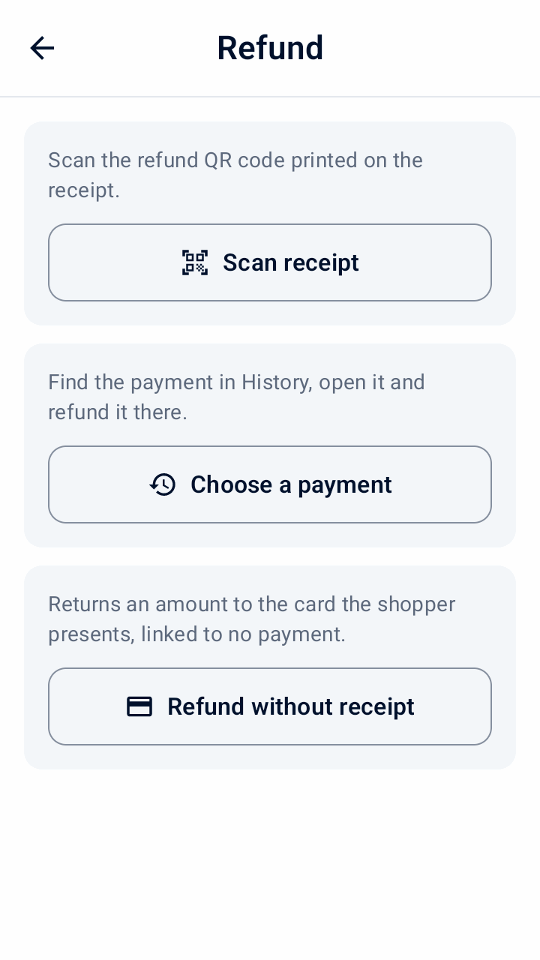
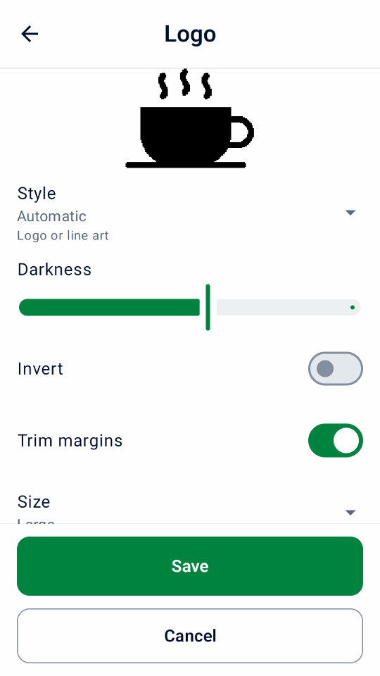
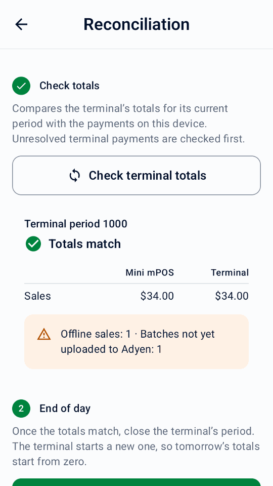

Guide
Using Mini mPOS
Prepare your business, take payments, deliver receipts and close the day. Add optional payment workflows when you need them.
Prepare your business
Prepare products, tax and staff access
Complete connection setup before taking real payments.
Set the currency and tax
- In Settings › Payments, choose a Currency that your merchant account accepts for in-person payments.
- In Settings › Tax, check the rates, whether prices include tax or tax is added at checkout, and the default rate for new products.
After setup, Settings › Payments may offer the merchant account’s primary settlement currency from Adyen. This is a suggestion, not confirmation that the account accepts payments in that currency. Choosing it opens the same pricing review; keeping your current currency changes nothing.
Every product has a tax rate; use a 0% rate for untaxed items. Switching off Charge tax stops charging tax but keeps the rates.
Important
Changing the currency keeps the numbers in your prices; it does not convert them at an exchange rate. Check your product prices afterward.
Add products
- Open Settings › Products and tap +.
- Enter a name, price and tax rate. Optionally add a category and a barcode, typed or scanned.
- For a deposit, switch on Pre-authorization product so that it appears only in pre-authorizations.
Set up staff PINs
In Settings › Security, tap Set PIN to protect Settings and Products with an Admin PIN, and choose how soon access locks again. Tap Set Manager PIN for protected actions; the Admin PIN cannot approve them. Use Change Admin PIN or Remove Admin PIN later.
Under Manager permissions, choose which actions need the Manager PIN. Similar actions share a switch; referenced refunds, refunds without receipt and cash refunds each have their own. Manager approval in these guides follows these choices.
Without an Admin PIN, every action is open. Once an Admin PIN exists, protected actions stay blocked until a Manager PIN is set. Removing the Admin PIN also removes the Manager PIN; permission choices are kept. Repeated wrong PINs lock PIN entry for a while.
Serve customers
Take a card payment
- On Home, tap New sale. Tap products, tap Scan barcode, or add a Custom item.
- Tap Charge. Check the items, tax and total, and fill in any reference or email fields.
- Tap Pay. The terminal, or the Adyen Payments app with Tap to Pay, asks the customer to pay.
- Wait for the result. Do not start another payment until it appears.
- Give the customer a receipt with Print receipt, Email receipt or Share receipt, unless it was delivered automatically.
Note
Depending on the terminal and your merchant account, customers insert or tap a card, or tap a phone or watch. With Tap to Pay, the Adyen Payments app guides them.
Warning
Result unknown does not mean the payment failed. Check the original payment before charging again.
Customer references and card saving are optional; see references and saved cards. To split the bill or take cash, gift cards or meal vouchers, see optional checkout workflows. To let customers pay on their own phone, use a payment link. If a payment is declined, see declined payments.
Refund or cancel a payment
- Refund
- For a charged payment. Returns all or part of the money.
- Cancel (void)
- For a held payment that has not been captured: tap Cancel pre-authorization for a deposit, or Cancel payment for a sale Awaiting tip. This releases the hold.
To refund:
- On Home, tap Refund, then Scan receipt to scan the refund QR code on the receipt, or Choose a payment to open the original sale in History.
- Choose a full refund, an amount or individual items. Item refunds need the original sale on this device.
- Confirm the refund, and enter the Manager PIN if asked.


These refunds are linked to their original payment. Refund paid payment links in the Customer Area.
A split sale is refunded to its original payments. Mini mPOS proposes how much goes back to each card and how much cash to hand back; tap a payment to adjust it. Cards are refunded first, one at a time, then cash, which needs a Manager PIN. If a card refund is not accepted, nothing more is returned; open the sale to review what is left.
A sale with a reported surcharge returns purchase amounts first, then tip, then surcharge; a full refund includes the remaining surcharge.
Refund without receipt
Use Refund without receipt only when there is no payment to refund, such as a return without a receipt. It returns an amount to the card the shopper presents and is linked to no payment, so Mini mPOS cannot check what was paid. You are liable for wrong or repeated refunds.
Ask Adyen to enable unreferenced refunds for the store and set Adyen’s refund limit in the Customer Area. Then, in Settings › Payments, turn on Allow refunds without receipt, set your own Refund limit and set a Manager PIN. Adyen does not allow these refunds in some countries or for QR-code wallets; Mini mPOS checks the store Adyen verified for the terminal.
Tap Refund without receipt, enter the amount, choose a reason, confirm and approve with the Manager PIN; the shopper then presents the card. Refund approved means the acquirer approved it at once; Refund requested means Adyen received the request. History, receipts and the daily report list these refunds separately; reconcile them manually.
If Adyen Support set a refund delay, turn on Refund delay set up. While the delay lasts, open the refund and tap Cancel refund, then check the Customer Area to see if it was stopped.
Adyen: Unreferenced refunds · Adyen: Cancel an unreferenced refund
Important
Refund requested means Adyen received the request, not that the customer has the money. Check the final outcome in the Customer Area. If a refund's result is unknown, check it before retrying.
Print, email or share receipts
From a payment result or a History entry, tap Print receipt or Email receipt. Tablets and phones also offer Share receipt, which sends an image through Android's share menu. Printing needs a terminal with a printer.
Customize and test receipts
- In Settings › Receipts, enter your business details, header and footer. Or tap Import business details from Adyen to review details from Adyen. Choose Fill missing details to keep existing text, or Replace existing details to use the supplied business name, address and phone. Blank imported fields, tax ID, title and footer stay unchanged.
- Choose Print automatically, when to print a Merchant copy, and whether to Show refund QR code.
- Tap Print test receipt and check the printout. The on-screen preview does not show the printer's exact layout.
Other options:
- Show tax amounts
- Shows the tax included in, or added to, the total. It does not change the tax charged.
- Show tax breakdown
- Lists the tax for each rate. Needed to show included tax when prices include tax.
- Show taxable totals by rate
- Groups item totals by tax rate, including 0%.
- Show references
- On by default. Prints the merchant reference and any customer reference, so that a receipt can be matched to its payment.
- Marked tax rate (%)
- Marks items at that rate with an Item marker and its explanation. Leave it blank for no marker.
- Characters per line
- 32 by default, for narrow receipt rolls. Choose the width for your printer with a test print.
In Settings › Receipts › Logo, choose a PNG, JPEG or WebP image. If the device has no file picker, send one from the setup helper, alone or with other setup. Check the black-and-white preview: Style chooses Auto, Logo or Photo, and Darkness, Invert and Trim margins fine-tune it. Choose a Large or Small Size, then save. Turn off Print business name when the logo already includes it.
The logo appears on printed, emailed and shared receipts, including reprints. To adjust it, choose the source image again; use Remove logo to clear it.


Set the language
The app supports English, Simplified Chinese, Traditional Chinese, Japanese, Brazilian Portuguese, Spanish and French. Settings › Language changes app text and receipt labels on this device at once; saved merchant text and product names stay unchanged. Follow device uses Android's language for the app. Adyen's card receipt lines follow the terminal's receipt language.
Set up email receipts
Outgoing access to your SMTP server, usually TCP 587 (STARTTLS) or 465 (SSL/TLS).
- Open Settings › Email receipts. Choose your provider, or enter the SMTP server, port, sender and login. Use STARTTLS or SSL/TLS.
- Send a test email.
- On the same screen, choose when to ask for the customer's email and whether to send receipts automatically.
Follow your provider's instructions to allow SMTP and get the right password:
If receipts do not print or send, see printer and email problems.
Close the day
Find payments and close the day
History lists payments and refunds by day, with daily totals.
Each page shows up to 100 entries across seven days; use Previous and Next to browse. Search covers all retained transactions.
- Filter by sales, Awaiting tip, pre-authorizations, refunds or Needs attention, and use Payment method for a card brand or wallet.
- Search by reference, authorization code, customer reference or email, the card's last four digits,
brand, wallet or exact amount. Every word must match:
visa 34finds Visa payments of 34.
On-screen totals follow your search and filters. Held payments, such as deposits and tips on the receipt, count as sales on the day their capture is accepted.
Close the day
- Open History, filter by Needs attention and resolve each entry; see unknown results.
- Check the Awaiting tip and pre-authorization filters. Enter tips, and capture or cancel deposits before their holds expire.
- Tap the print icon beside the day to print the Local daily summary.
- Reconcile with Adyen's reports in the Customer Area; see the Adyen settlement reconciliation guide .
The summary covers the whole day, ignoring filters: sales, tips included, accepted refunds, net, new holds and unresolved operations, for each currency. TEST and simulator activity is labeled. Paid payment links and captures without a known date are listed separately as undated activity.
Important
The Local daily summary covers only payments kept on this device. It is not Adyen's settlement and does not include other devices. The Customer Area is authoritative.
Warning
Switching between LIVE, TEST and the simulator permanently deletes all payment history and report data on this device. If unfinished payments exist, the app warns again: nothing is canceled at Adyen, but the local recovery and safe retry data is lost. Products and settings stay.
Compare with terminal totals and close a period
- On Home, tap Reconciliation, then Check terminal totals. Mini mPOS first checks pending or unknown terminal payments, then shows Mini mPOS and terminal sales and refunds side by side.
- If Totals differ, resolve the payments that need attention in History and check again. The terminal period is not necessarily a calendar day; other devices using the terminal or missing local history can cause differences. Payment links, token charges and sample history are not terminal payments.
- At the end of the day, tap Close terminal period, confirm, and complete Manager approval if requested. The terminal ends its period and starts a new one; this cannot be undone.
- Optionally, tap Print today’s report for the Local daily summary.
Not available with Tap to Pay. A matching comparison or closed period does not confirm settlement, refund completion or offline upload; the Customer Area remains authoritative.


Manage devices and data
Set up more devices and manage data
- On the configured device, open Settings › Data and transfer › Share with another device . Choose the catalog, settings and/or passwords and keys, then tap Show QR codes.
- On the new device, choose Set up from another device and scan all the codes, in any order. Choose whether to merge or replace its catalog.
- Enter the 12-character transfer code shown on the first device, even when copying only products or settings. Keep it separate from the QR codes. Tap Import.
- Check prices and tax, test the connection in Settings › Terminal, and print a test receipt.
The new device keeps its own payment destination, terminal, environment and Tap to Pay registration. A shared key works for another terminal only if Adyen assigns it the same key.
Important
This is a one-time copy, not synchronization or a backup of payment history. Each device keeps its own payments. Clearing the app's data in Android deletes all products, settings and history on the device.
In Settings › Data and transfer, set Keep transactions for or tap Clear settled history; unresolved payments are always kept.
On a tablet or phone, Mini mPOS checks for a newer version at startup. If Home offers Update, tap it to open the APK in your browser, then install the download. Adyen terminals update through the Customer Area, not this prompt. You can also get the latest release and follow the installation steps. Keep the same signing source and install over the existing app; do not uninstall or clear its data.
For import problems, see PIN and transfer problems.
Payment options
- Check and configure Adyen capabilities
- Use optional checkout workflows
- Recognize offline payments and pending batches
- Scan a shopper wallet code
- Saved cards (Tokens)
- Sell and manage gift cards
- Take payment with a link
- Hold and collect a deposit
- Collect a tip on the terminal
- Collect a tip written on the receipt